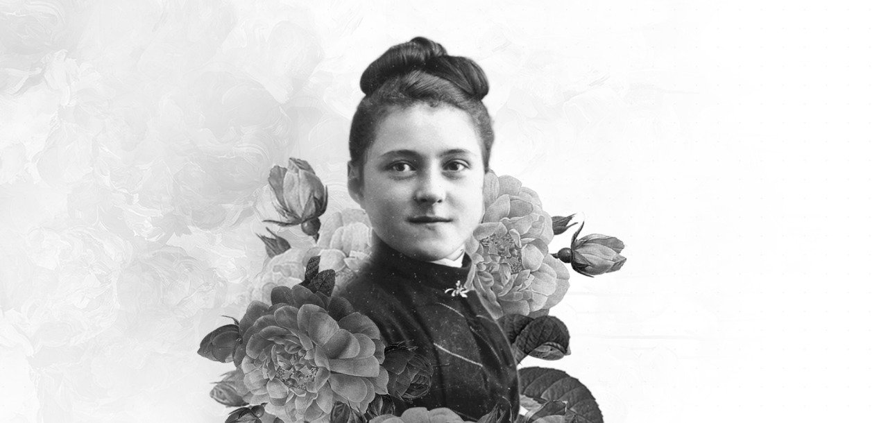
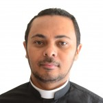
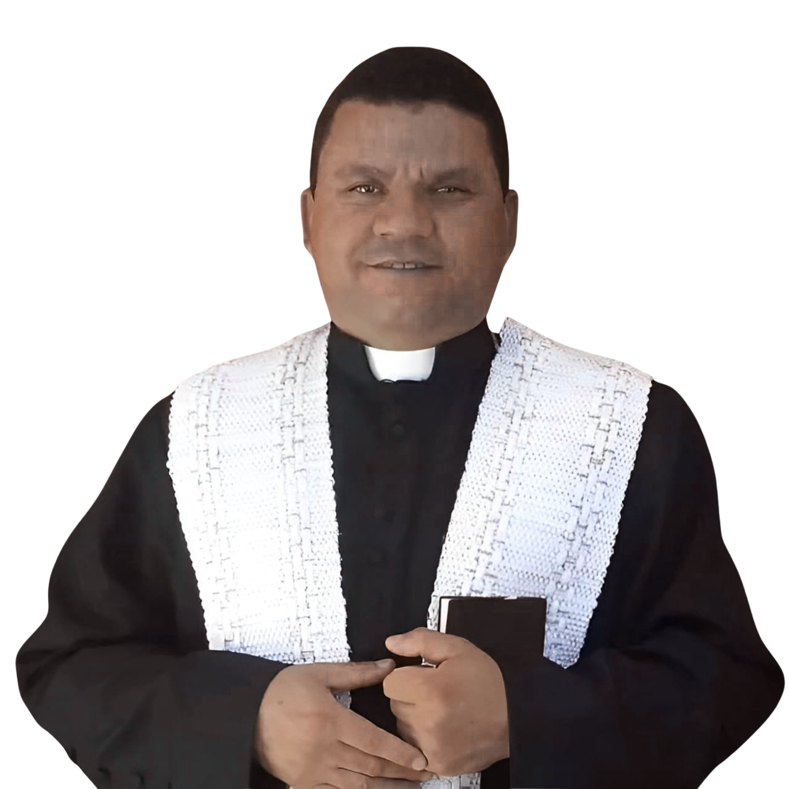
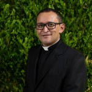
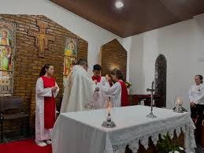

Paróquia
Santa Teresinha do Menino Jesus

Nossa Padroeira
Santa Teresinha do Menino Jesus, também conhecida como Santa Teresa de Lisieux, nasceu em 1873, na França. Desde pequena, demonstrou um profundo amor por Deus e um desejo ardente de servir. Aos 15 anos, ingressou no Carmelo de Lisieux, onde viveu uma vida simples, marcada pela humildade, oração e confiança total na misericórdia divina. Sua espiritualidade, conhecida como a “pequena via”, ensina que a santidade está ao alcance de todos por meio de pequenos gestos feitos com grande amor. Mesmo sem sair do convento, Santa Teresinha foi proclamada Padroeira das Missões, reconhecida por seu imenso zelo missionário e amor pela humanidade. Faleceu aos 24 anos, deixando como legado sua autobiografia, História de uma Alma, que continua a transformar vidas ao redor do mundo. Em 1997, foi proclamada Doutora da Igreja por São João Paulo II.
Nossos Párocos

Padre Everaldo
2010 - 2015

Padre Adriano
2016 - 2020

Padre Edjalma
2021 - Atual
Horário das Missas

Igreja Matriz
Quinta-feira: 19h00
Sábado: 19h30
Domingo: 08h00
Confissões
Terça: 10h00
Sexta: 09h00

Vila Neves
Sexta-feira: 19h00
Domingo: 19h00
Eventos
Carregando eventos...
Mídias dos Eventos
Carregando mídias...